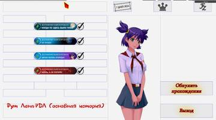
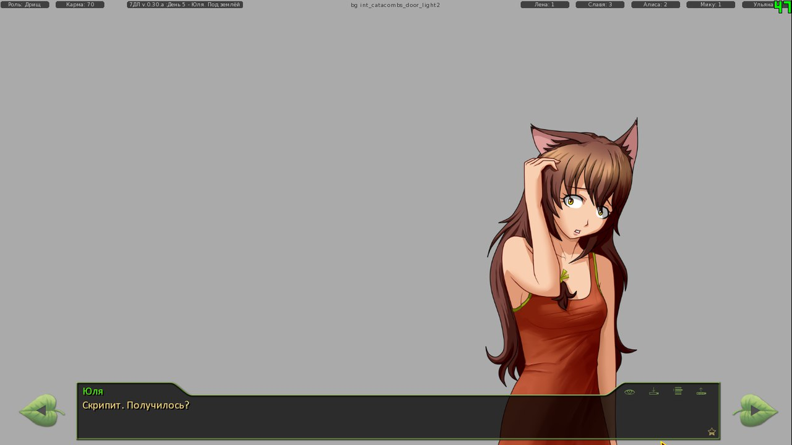

darkiiiking написал(а):
т.е длс нужен только для кошко-рута?
Правильно, на данный момент только для него.

7 дней лета |
Вы здесь » 7 дней лета » Техподдержка » Технические проблемы

т.е длс нужен только для кошко-рута?
Правильно, на данный момент только для него.

Спасибо.
Vedblade написал(а):
DLC немного изменяет события (Семен замечает кое-какие странности) и позволяет выйти на ЮВАО-рут.
т.е длс нужен только для кошко-рута?
да, пока что в длс только это

БЛ нестим, без модпаков и прочего (чистая)
Закинул файл с яндекса (ссылка на викии) в D/Everlasting Summer/game и получил /game/scenario_alt
лог:
I'm sorry, but an uncaught exception occurred.
While executing init code:
File "game/scenario_alt/Config/conf_res_wdg.rpy", line 2, in script
File "game/scenario_alt/Config/conf_res_wdg.rpy", line 2, in python
NameError: name 'filters' is not defined
-- Full Traceback ------------------------------------------------------------
Full traceback:
File "D:\Everlasting Summer\renpy\bootstrap.py", line 265, in bootstrap
renpy.main.main()
File "D:\Everlasting Summer\renpy\main.py", line 263, in main
game.context().run(node)
File "D:\Everlasting Summer\renpy\execution.py", line 288, in run
node.execute()
File "D:\Everlasting Summer\renpy\ast.py", line 720, in execute
renpy.python.py_exec_bytecode(self.code.bytecode, self.hide, store=self.store)
File "D:\Everlasting Summer\renpy\python.py", line 1304, in py_exec_bytecode
exec bytecode in globals, locals
File "game/scenario_alt/Config/conf_res_wdg.rpy", line 2, in <module>
$ filters["widget__7dl_widget"] = u"Прогресс и информация по моду 7ДЛ"
NameError: name 'filters' is not defined
Windows-7-6.1.7600
Ren'Py 6.16.3.502
Everlasting Summer 1.0

shers написал(а):БЛ нестим, без модпаков и прочего (чистая)
Закинул файл с яндекса (ссылка на викии) в D/Everlasting Summer/game и получил /game/scenario_altлог:
I'm sorry, but an uncaught exception occurred.While executing init code:
File "game/scenario_alt/Config/conf_res_wdg.rpy", line 2, in script
File "game/scenario_alt/Config/conf_res_wdg.rpy", line 2, in python
NameError: name 'filters' is not defined-- Full Traceback ------------------------------------------------------------
Full traceback:
File "D:\Everlasting Summer\renpy\bootstrap.py", line 265, in bootstrap
renpy.main.main()
File "D:\Everlasting Summer\renpy\main.py", line 263, in main
game.context().run(node)
File "D:\Everlasting Summer\renpy\execution.py", line 288, in run
node.execute()
File "D:\Everlasting Summer\renpy\ast.py", line 720, in execute
renpy.python.py_exec_bytecode(self.code.bytecode, self.hide, store=self.store)
File "D:\Everlasting Summer\renpy\python.py", line 1304, in py_exec_bytecode
exec bytecode in globals, locals
File "game/scenario_alt/Config/conf_res_wdg.rpy", line 2, in <module>
$ filters["widget__7dl_widget"] = u"Прогресс и информация по моду 7ДЛ"
NameError: name 'filters' is not definedWindows-7-6.1.7600
Ren'Py 6.16.3.502
Everlasting Summer 1.0
Скорее всего ошибка из-за отсутствия мод-селектора.
Его поместить в \game.
I'm sorry, but an uncaught exception occurred.
While running game code:
File "game/scenario_alt/Scenario/WIP/alt_route_mi_7dl.rpy", line 25, in script call
File "game/scenario_alt/Scenario/WIP/alt_route_mi_7dl.rpy", line 1989, in script
File "game/scenario_alt/Scenario/WIP/alt_route_mi_7dl.rpy", line 1989, in python
File "game/scenario_alt/Config/conf_res_scr.rpy", line 185, in python
Exception: Expected an image, but got a general displayable.
-- Full Traceback ------------------------------------------------------------
Full traceback:
File "D:\Everlasting Summer\renpy\execution.py", line 288, in run
node.execute()
File "D:\Everlasting Summer\renpy\ast.py", line 1009, in execute
show_imspec(self.imspec, atl=getattr(self, "atl", None))
File "D:\Everlasting Summer\renpy\ast.py", line 927, in show_imspec
expression = renpy.python.py_eval(expression)
File "D:\Everlasting Summer\renpy\python.py", line 1338, in py_eval
return eval(py_compile(source, 'eval'), globals, locals)
File "game/scenario_alt/Scenario/WIP/alt_route_mi_7dl.rpy", line 1989, in <module>
scene expression Dawn("bg ext_shed_sunset") with dissolve
File "game/scenario_alt/Config/conf_res_scr.rpy", line 185, in Dawn
return im.MatrixColor(ImageReference(id), im.matrix.brightness(-0.1) * im.matrix.tint(0.94, 0.82, 1.0))
File "D:\Everlasting Summer\renpy\display\im.py", line 1046, in __init__
im = image(im)
File "D:\Everlasting Summer\renpy\display\im.py", line 1534, in image
return image(arg.target, loose=loose, **properties)
File "D:\Everlasting Summer\renpy\display\im.py", line 1549, in image
raise Exception("Expected an image, but got a general displayable.")
Exception: Expected an image, but got a general displayable.
Windows-7-6.1.7600
Ren'Py 6.16.3.502
Everlasting Summer 1.0
произошло на "Только вот вряд ли она пойдёт грабить столовую - не Двачевская же."
window hide
scene expression Dawn("bg ext_shed_sunset") with dissolve
а ещё не хватает кучи пикч, в т.ч. выезжающей. Может, не все ещё готовы, но когда я пытался вставить тот же домик ОД из оригинала с переименовыванием файла, не выходило. Собссна, хау ту фикс?
bg_ext_stand_2
cg d3_fag_room
bg int_dining_hall_people_sunset
bg ext_stage_big_day
и так далее
Я понимаю, что за два-три дня весь форум захламил своими сообщениями, but у меня нет того пресловутого "пазла" в меню. хау ту фикс?
Я понимаю, что за два-три дня весь форум захламил своими сообщениями, but у меня нет того пресловутого "пазла" в меню. хау ту фикс?
Какие концовки пройдены?

а ещё не хватает кучи пикч, в т.ч. выезжающей. Может, не все ещё готовы, но когда я пытался вставить тот же домик ОД из оригинала с переименовыванием файла, не выходило. Собссна, хау ту фикс?
bg_ext_stand_2
cg d3_fag_room
bg int_dining_hall_people_sunset
bg ext_stage_big_day
и так далее
Установлен ли мод-пак? В версии мода для 1.1 (на которой случился этот вылет) изрядное количество картинок имеют источником не собственно папку мода, а папку game\images, которая в мод-паке как раз и содержится.
shers написал(а):
Я понимаю, что за два-три дня весь форум захламил своими сообщениями, but у меня нет того пресловутого "пазла" в меню. хау ту фикс?
Какие концовки пройдены?
Лена бэд(вдоль, а не поперёк)/рфгуд(где она в машине с чёрными волосами - не помню ачивку)/вся жизнь впереди (сссргуд+возможность посмотреть на Землю из космоса)
Славя глубина, глубина(катапульта кажется)/рфбэд (подделка)/+-полчаса (сссргуд)/на том же самом месте (сссргуд)
плюс через прыгалку ОД+Лена (Дождь)
Установлен ли мод-пак? В версии мода для 1.1 (на которой случился этот вылет) изрядное количество картинок имеют источником не собственно папку мода, а папку game\images, которая в мод-паке как раз и содержится.
вот
хм. нет, не закачал его до конца. и у меня, кажется, 1.0, если логи не лгут. на него модпак пойдёт?
поставил мод-пак
I'm sorry, but an uncaught exception occurred.
While loading the script.
ScriptError: Name u'alt_7dl_titles' is defined twice: at game/scenario_alt/Config/conf_res_mg.rpy:673 and game/scenario_alt/endings/alt_titles.rpy:3.
-- Full Traceback ------------------------------------------------------------
Full traceback:
File "D:\Everlasting Summer\renpy\bootstrap.py", line 265, in bootstrap
renpy.main.main()
File "D:\Everlasting Summer\renpy\main.py", line 226, in main
renpy.game.script.load_script() # sets renpy.game.script.
File "D:\Everlasting Summer\renpy\script.py", line 177, in load_script
self.load_appropriate_file(".rpyc", ".rpy", dir, fn, initcode)
File "D:\Everlasting Summer\renpy\script.py", line 436, in load_appropriate_file
if self.load_file(dir, fn + compiled, initcode):
File "D:\Everlasting Summer\renpy\script.py", line 320, in load_file
self.finish_load(stmts, initcode)
File "D:\Everlasting Summer\renpy\script.py", line 392, in finish_load
node.filename, node.linenumber))
ScriptError: Name u'alt_7dl_titles' is defined twice: at game/scenario_alt/Config/conf_res_mg.rpy:673 and game/scenario_alt/endings/alt_titles.rpy:3.
Windows-7-6.1.7600
Ren'Py 6.16.3.502
и не открывается игра даже
очередной безголовый пользователь решил скачать какой-то архив и в результате
превратил свою машину, а также весь локальный кластер в систему для майнинга биткоиновсломал себе игру
Отредактировано shers (2016-09-16 11:13:38)
shers написал(а):поставил мод-пак
I'm sorry, but an uncaught exception occurred.
While loading the script.
ScriptError: Name u'alt_7dl_titles' is defined twice: at game/scenario_alt/Config/conf_res_mg.rpy:673 and game/scenario_alt/endings/alt_titles.rpy:3.-- Full Traceback ------------------------------------------------------------
Full traceback:
File "D:\Everlasting Summer\renpy\bootstrap.py", line 265, in bootstrap
renpy.main.main()
File "D:\Everlasting Summer\renpy\main.py", line 226, in main
renpy.game.script.load_script() # sets renpy.game.script.
File "D:\Everlasting Summer\renpy\script.py", line 177, in load_script
self.load_appropriate_file(".rpyc", ".rpy", dir, fn, initcode)
File "D:\Everlasting Summer\renpy\script.py", line 436, in load_appropriate_file
if self.load_file(dir, fn + compiled, initcode):
File "D:\Everlasting Summer\renpy\script.py", line 320, in load_file
self.finish_load(stmts, initcode)
File "D:\Everlasting Summer\renpy\script.py", line 392, in finish_load
node.filename, node.linenumber))
ScriptError: Name u'alt_7dl_titles' is defined twice: at game/scenario_alt/Config/conf_res_mg.rpy:673 and game/scenario_alt/endings/alt_titles.rpy:3.Windows-7-6.1.7600
Ren'Py 6.16.3.502и не открывается игра даже
Отредактировано shers (Сегодня 14:13:38)
С этим по крайней мере все понятно, в мод-паке присутствует какая-то древняя версия 7ДЛ и она конфликтует с текущей. Лечится удалением папки scenario_alt с последуеще установкой 7ДЛ заново.
А вот с пазлом странно: должен показываться 1 кусочек(Лены).
у меня, кажется, 1.0, если логи не лгут. на него модпак пойдёт?
Да, это она (1.1) и есть. В ноябре 2013 вышла (вернее, была преждевременно выложена) версия 1.0 (см. с. 14), а в декабре того же года - доработанная официальная версия. Номер на 1.1 менять не стали (по-видимому, забыли), хотя там доработаны изображения и итоговый седьмой день.
is defined twice
Эта фраза всегда появляется в случае дублирования файлов *.rpy (с одним и тем же названием - в разных папках одного и того же мода). Лечится подобное следующим образом:
в мод-паке присутствует какая-то древняя версия 7ДЛ и она конфликтует с текущей. Лечится удалением папки scenario_alt с последуеще установкой 7ДЛ заново.
Отредактировано openplace (2016-09-16 19:23:52)
Свернутый текст
shers написал(а):
поставил мод-пак
I'm sorry, but an uncaught exception occurred.
While loading the script.
ScriptError: Name u'alt_7dl_titles' is defined twice: at game/scenario_alt/Config/conf_res_mg.rpy:673 and game/scenario_alt/endings/alt_titles.rpy:3.-- Full Traceback ------------------------------------------------------------
Full traceback:
File "D:\Everlasting Summer\renpy\bootstrap.py", line 265, in bootstrap
renpy.main.main()
File "D:\Everlasting Summer\renpy\main.py", line 226, in main
renpy.game.script.load_script() # sets renpy.game.script.
File "D:\Everlasting Summer\renpy\script.py", line 177, in load_script
self.load_appropriate_file(".rpyc", ".rpy", dir, fn, initcode)
File "D:\Everlasting Summer\renpy\script.py", line 436, in load_appropriate_file
if self.load_file(dir, fn + compiled, initcode):
File "D:\Everlasting Summer\renpy\script.py", line 320, in load_file
self.finish_load(stmts, initcode)
File "D:\Everlasting Summer\renpy\script.py", line 392, in finish_load
node.filename, node.linenumber))
ScriptError: Name u'alt_7dl_titles' is defined twice: at game/scenario_alt/Config/conf_res_mg.rpy:673 and game/scenario_alt/endings/alt_titles.rpy:3.Windows-7-6.1.7600
Ren'Py 6.16.3.502и не открывается игра даже
Отредактировано shers (Сегодня 14:13:38)
С этим по крайней мере все понятно, в мод-паке присутствует какая-то древняя версия 7ДЛ и она конфликтует с текущей. Лечится удалением папки scenario_alt с последуеще установкой 7ДЛ заново.
А вот с пазлом странно: должен показываться 1 кусочек(Лены).
переустановить я догадался. а пазл сам вообще где показывается? я его не вижу как таковой.
переустановить я догадался. а пазл сам вообще где показывается? я его не вижу как таковой.
В левом верхнем углу на стартовом экране мода ("Я с трудом вспоминаю с чего все начиналось").
shers написал(а):
переустановить я догадался. а пазл сам вообще где показывается? я его не вижу как таковой.
В левом верхнем углу на стартовом экране мода ("Я с трудом вспоминаю с чего все начиналось").
затем выбор персонажа, как на скрине в викии. при нажатии на кусок пазла (фиолетовый) происходит переход на тот самый выбор. если жать на выборе персонажа - будет выбор, а сам пазл не открывается вообще.
там же должны быть показаны концовки, которые уже получены и по центру девушка, но ни того, ни этого нема
Отредактировано shers (2016-09-17 18:18:16)
там же должны быть показаны концовки, которые уже получены и по центру девушка
Если честно, первый раз слышу про этот функционал, у меня его тоже нет. 
Если имеется ввиду это:
То это мод. Ставится поверх 7ДЛ.
shers написал(а):
там же должны быть показаны концовки, которые уже получены и по центру девушка
Если честно, первый раз слышу про этот функционал, у меня его тоже нет.
Если имеется ввиду это:
То это мод. Ставится поверх 7ДЛ.
Да. В таком случае, моя ошибка. Думал, что он уже есть в паковане

Если после выбора персонажа случайно покрутить колесо мыши вверх, то заставка селектора останется висеть на переднем плане и после попытки продолжить игру.
Для просмотра скрытого текста - войдите или зарегистрируйтесь.

Алиса, 3-ий день, Герк вот такая вот фигня появляется после вылета на рабочий стол:
Для просмотра скрытого текста - войдите или зарегистрируйтесь.
Отредактировано DarkSwordsman (2016-09-30 16:02:10)
Алиса, 3-ий день, Герк вот такая вот фигня появляется после вылета на рабочий стол:
Опять эта ошибка. Это место почему-то конфликтует с чем только можно.
Версия 0.27f
1)Общий рут строка 24053. Неверно прописан путь до файла: ищет в /game/images/
2)Рут Алисы строка 12986. У платья неправильное имя, а улыбку ищет опять в images
Решается либо перенесением картинки ext_washstand_night.jpg из \game\scenario_alt\Pics\bg в указанную папку, либо удалением конфликтного мода. В данном случае, если я не ошибаюсь, это "Бесконечные каникулы".
Отредактировано Vedblade (2016-09-30 16:26:10)
Шо обескураживает: играю в рекомендованную сборку со странички бл 7д в вики. Попытка самому собрать игру из чистой бл 1.1 и папки мода приводит к тому, что установленная бл вообще не запускается.
Шо обескураживает: играю в рекомендованную сборку со странички бл 7д в вики. Попытка самому собрать игру из чистой бл 1.1 и папки мода приводит к тому, что установленная бл вообще не запускается.
Что именно происходит во 2 случае? А сборка, да, почему-то кривоватая.
Игра висит в диспетчере до набора 300мб в памяти, а потом вылетает. Трэйса приложить не смогу, ибо удалил все. Сейчас заново попробовал собрать игру из бл 1.1 и папки мода с яндекс диска - работает, вышел таки на умывальники)) Причина ошибки, по всей видимости, была в ранней версии мода 28b - скачивал где-то в конце лета. Сейчас перекачал и пока работает.
Таки вот опять, ну или снова, вылетает, но уже при сохранении. Вылет через раз примерно. Трейс прилагаю.
Для просмотра скрытого текста - войдите или зарегистрируйтесь.
Отредактировано DarkSwordsman (2016-10-05 00:54:19)

Админы, Исправьте кошкорут! в 5 дне слова: Внутри оказалось не так темно, как я ожидал. Солнечные лучи нет-нет, да пробирались через дыры в потолке и разбитые окна.
Проблема: серый экран вместо бэкграунда сверху написано bg int_old_building_day_uvao
Такая же проблема через некоторое время, написано bg int_catacombs_doors_light2. Потом такое ещё появляется на сцене, где перепихивается гг с ювао

Отредактировано Васька (2016-11-19 21:26:08)
Исправил уже, автору отправил.
Может кто скинуть инструкцию как установить этот мод на айфон ?
Может кто скинуть инструкцию как установить этот мод на айфон ?
https://vk.com/esmanager
Этот способ работат с jailbreakом а без него можно как-то?
Вы здесь » 7 дней лета » Техподдержка » Технические проблемы